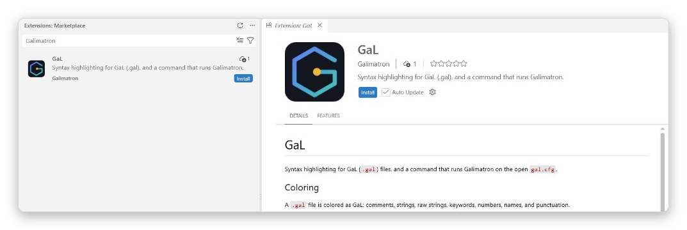

Editor support¶
Galimatron works on files, so any editor will do. For Visual Studio Code there is an extension called GaL (gal-syntax). It does two things.

To install it, open the Extensions view in Visual Studio Code, search for Galimatron, and press Install.
Coloring¶
A .gal file is recognized as the language GaL. The extension colors:
- comments (
// ...and/* ... */), - strings, including raw strings
R"(...)"and the_temark of a template, - keywords (
aggregate,version,label,wizard,create, ...), - numbers, names and punctuation.
The reason it matters: a .gal file is something you read often. With color, the structure of versions and the commands of the Wizard are visible at a glance, and an unclosed string stands out at once.
Run Galimatron from the editor¶
- Open your project's
gal.cfgand keep it the active editor. The command runs the opengal.cfg, and refuses any other file. - Open the Command Palette and run Galimatron: execute. A
gal.cfgwith unsaved changes is saved first.
The command runs
galimatron --gal-config-file gal.cfg --log-config-file log.cfg
with the folder of gal.cfg as the working directory. It needs log.cfg in the same folder as gal.cfg. Paths in log.cfg such as intermediate/galimatron.log are therefore relative to your project, as they should be.
The run is a Visual Studio Code task. Its output goes to a dedicated terminal panel named Galimatron, which is cleared at each run, and the files that Galimatron rewrote update in the editor. A good loop is: edit a .gal file or write a Wizard command in console.gal, run Galimatron: execute, read the result.
The executable¶
When the extension starts, it looks for the installed executable and stores the path in the setting Galimatron: Executable (galimatron.executable).
| System | It looks for | In |
|---|---|---|
| Windows | galimatron.exe |
PATH, then Program Files\Galimatron\bin |
| Linux | galimatron |
PATH, /usr/bin, /usr/local/bin |
A path that already points to a file is left as it is, so you can set your own build there.
If nothing is found, the extension asks whether you want to install Galimatron. Answer yes: it opens the Galimatron project on GitHub. Restart Visual Studio Code after the installation, so the executable can be found. The question is asked once, and the search runs again on the next start. If the path is still empty when you run the command, the extension asks you to choose the executable and stores it.
A project to try¶
The project galimatron_hello is made for this. Open its folder, open gal.cfg, run Galimatron: execute. If incoming_gal/hello.gal has a new counter and page/hello.html appears, the extension and the executable work. See Getting started.